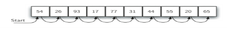

目标
· 了解和实现顺序搜索和二分法搜索。
· 了解和实现选择排序、冒泡排序、归并排序、快速排序、插入排序和希尔排序。
· 了解用散列法实现搜索的技术。
· 了解抽象数据类型：映射Map。
· 采用散列实现抽象数据类型Map。
顺序搜索
无序表
图1显示了顺序搜索的工作原理。从列表中的第一项开始，我们按照初始顺序从一项移到下一项，直到我们发现正在寻找的数据项或者遍历所有数据项。如果我们遍历了所有数据项，我们就会发现我们正在寻找的数据项是不存在的。

#实现代码
def sequentialSearch(alist, item):
pos = 0
found = False
while pos < len(alist) and not found:
if alist[pos] == item:
found = True
else:
pos = pos + 1
return found
testlist = [1, 2, 32, 8, 17, 19, 42, 13, 0]
print(sequentialSearch(testlist, 3))
print(sequentialSearch(testlist, 13))
CodeLens：一个无序表的顺序排序 （搜索1)
有序表
如果在某些情况下，数据项是有序的，顺序搜索又会发生什么？我们能让我们的搜索技术更高效吗？
假定列表是按照一个递增的顺序构建的(从小到大)。如果我们要找的数据项在列表里面，它在n个位置中的任意位置的机会如以前一样是相等的。我们依然将经过相同的比较次序去发现目标项。然而，如果数据项不在列表里面，将会有一个明显的优势。图2就展示了搜索50这个数据项的算法流程。注意，在到54之前一直是执行比对操作的。然而，在这一点上，我们知道了一些另外的东西。因为这个列表是被排好序的，所以在54之前找不到，那么比54大的数据项肯定也不能满足条件。在这种情况下，算法并没有要求继续去遍历所有数据项来表明目标项没有被找到。 它可以立刻停止。
def orderedSequentialSearch(alist, item):
pos = 0
found = False
stop = False
while pos < len(alist) and not found and not stop:
if alist[pos] == item:
found = True
else:
if alist[pos] > item:
stop = True
else:
pos = pos + 1
return found
testlist = [0, 1, 2, 8, 13, 17, 19, 32, 42,]
print(orderedSequentialSearch(testlist, 3))
print(orderedSequentialSearch(testlist, 13))
CodeLens：一个有序列表的顺序搜索（搜索2）
二分法搜索
可以更好地利用有序表的优势。在顺序搜索中
二分搜索将从中间项开始检测，而不是按顺序搜索列表。
如果查找项与我们刚搜索到的项匹配，则搜索结束。
如果不匹配，我们可以利用列表的有序性来排除掉一半的剩余项。
图3展示了这种算法如何快速找到值为54的项。完整的过程在CodeLens 3中展示了出来。

def binarySearch(alist, item):
first = 0
list = len(alist) - 1
found = False
while first <= last and not found
midpoint = (first + last) / 2
if alist[midpoint] == item:
found = True
else:
if item < alist[midpoint]:
last = midpoint - 1
else:
first = midpoint + 1
return found
testlist = [0, 1, 2, 8, 13, 17, 19, 32, 42,]
print(orderedSequentialSearch(testlist, 3))
print(orderedSequentialSearch(testlist, 13))
CodeLens：二分搜索一个有序表（搜索 3）
def binarySearch(alist, item):
if len(alist) == 0 :
return False
else:
midpoint = len(alist)//2
if alist[midpoint] == item:
return True
else:
if item < alist[midpoint]:
return binarySearch (alist[:midpoint],item)
else:
return binarySearch (alist[midpoint+1:],item)
testlist = [0, 1, 2, 8, 13, 17, 19, 32, 42,]
print(binarySearch(testlist, 3))
print(binarySearch(testlist, 13))
CodeLens 4：二分搜索——递归版本（搜索4）
总之，我们完成了遍历。比对的次数需要通过解方程n/2^i=1得到。解得i=log（n）。最大比对次数是关于列表中项数的对数。因此，二分搜索的复杂度是O(log(n))。
散列
建立一种新的数据结构，基于它的搜索算法的时间复杂度为O(1)。这个概念被称为散列。为了实现这一数据结构，当我们尝试去寻找某一数据时，我们需要知道更多关于这一数据项可能在哪些位置出现的信息。如果所有的数据项都在恰当的位置上，那么我们就可以利用对应关系到那个位置上看看该数据项是否存在。然而，情况通常都不会这么简单。
散列表是一种数据的集合，其中的每个数据都通过某种特定的方式进行存储以方面日后的查找。散列表的每一个位置叫做槽，能够存放一个数据项，并以从0开始递增的整数命名。例如，第一个槽记为0，下一个记为1，再下一个记为2，并以此类推。
在初始条件下，散列表中是没有任何数据的，即每个槽都是空的。我们可以利用列表实现一个散列表，它的每一个元素都被初始化为None。
下图展示了一个长度m=11的散列表，换言之，这个散列表中有m个槽，它们被依次命名为0到10。

散列函数
某个数据项与在散列表中存储它的槽之间的映射叫做散列函数。散列函数可以将任意一个数据项存储到集合中并返回一个介于槽命名区间内的，即0与m-1之间的整数。
假设我们有一列整数54、26、93、17、77、31。
我们的第一个散列函数，有时被称为“求余”，简单地将要存储的数据项与散列表的大小相除，返回余数作为这个数据项的散列值(h(item)=item%11)。

一旦求出了散列值，我们就可以将每一个数据项插入到散列表中制定的位置
负载因子
另外我们还可以注意到11个槽中的6个被占据。一般地，我们把槽被占据的比例叫做负载因子。在这个例子中，负载因子 。在这个例子中，
。在这个例子中，
。在这个例子中，
图5：填入了6个数据项的散列表
现在当我们想要查找一个数据项时，我们只需要使用散列函数去计算得到这个数据项对应槽的名字并在这个槽中检查该数据项是否存在即可。这个搜索过程的时间复杂度为O（1），因为通常计算出散列值和得到散列表在该位置的索引需要一定的时间。如果所有数据项都在散列函数所规定的位置上，我们就已经得到了一个时间复杂度为常数量级的搜索算法。
散列函数
对于一组给定的数据项，如果一个散列函数可以将每一个数据项都映射到不同的槽中，那么这样的散列函数叫做完美散列函数。如果已知数据项是固定不变的，我们就可能构造一个完美散列函数（你可以参考练习来获得更多有关完美散列函数的知识）。但是，如果给定的是任意的一组数据项，那么就没有一种系统化的方法来构造一个完美的散列函数。幸运的是，我们并不需要一个绝对的完美散列函数，不完美的散列函数一样可以在实用中有优秀的表现。
- 折叠法
- 平方取中法
- 求余法
- 非数字的数据项，例如字符串创建散列表
你们还可以想出其他的一些方法去计算数据的散列值。但是最重要的事情就是散列函数必须足够高效以防止它成为占据存储空间和搜索进程的主要部分。如果散列函数过于复杂，导致花费大量的时间去计算槽的名称，可能还不如进行简单的顺序搜索或者二分法搜索，这就失去了散列的意义。
冲突解决方法
- 一种解决冲突的方法就是搜索散列表并寻找另一个空的槽来存放这个有冲突的数据。
- 一种简单的方法就是从发生冲突的位置开始顺序向下开始寻找，直到我们遇到第一个空的槽。
- 另一个解决冲突的替代方法是允许每一个槽都能填充一串而不是一个数据（称作链
实现映射的抽象数据类型
字典是Python中最有用的数据类型之一。字典是一个可以储存密钥-数据对的关联数据类型。密钥是用来查找和它相关联的数据值的。我们通常把这个想法称作映射。
映射的抽象数据类型定义如下：它以一个密钥与一个数据值之间关联的无序集合作为结构。映射中的密钥都是独特的，以保证和数据值之间的一一对应关系。映射有以下的相关操作：
- Map() 产生一个新的空映射，返回一个空映射的集合。
- Put(key,val) 往映射中添加一个新的密钥-数据值对。如果密钥已经存在，那么将旧的数据值置换为新的。
- get(key) 给定一个 key 值，返回关联的数据，若不存在，返回None 。
- del 从映射中删除一个密钥-数据值对，声明形式为 del map[key]
- len() 返回映射中的存储密钥-数据值对的个数
- in 当表述是key in map，返回 True否则返回 False
字典的一个巨大的好处在于给定密钥时，我们能够迅速的找到与其关联的数据值。为了使得这种快速搜索得以实现，我们需要一种高效的搜索方法。正如之前所描述的，在一个散列表中搜索数据的时间复杂度在O（1）级别。
在分析散列表的使用情况时最重要的因素是负载因子。从概念上来看，如果较小，那么发生冲突的概率就较低，这意味着数据项有更大的可能填充在它们本该处于的位置上。如果较大，这意味着整个散列表接近于被填满，紧接着会造成越来越多的冲突。冲突的解决也会变得越来越困难，需要越来越多的比对操作来找到一个空槽。如果通过数据链方法解决冲突，逐渐增多的冲突预示着在每条链上会存储越来越多的数据项。